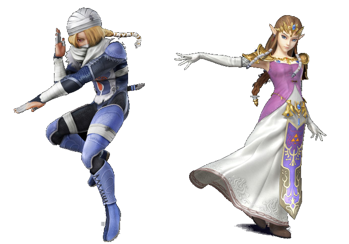
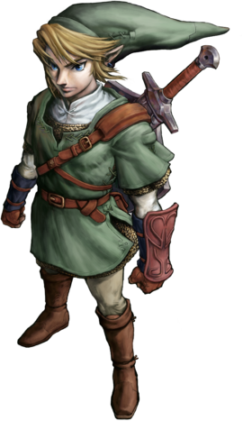
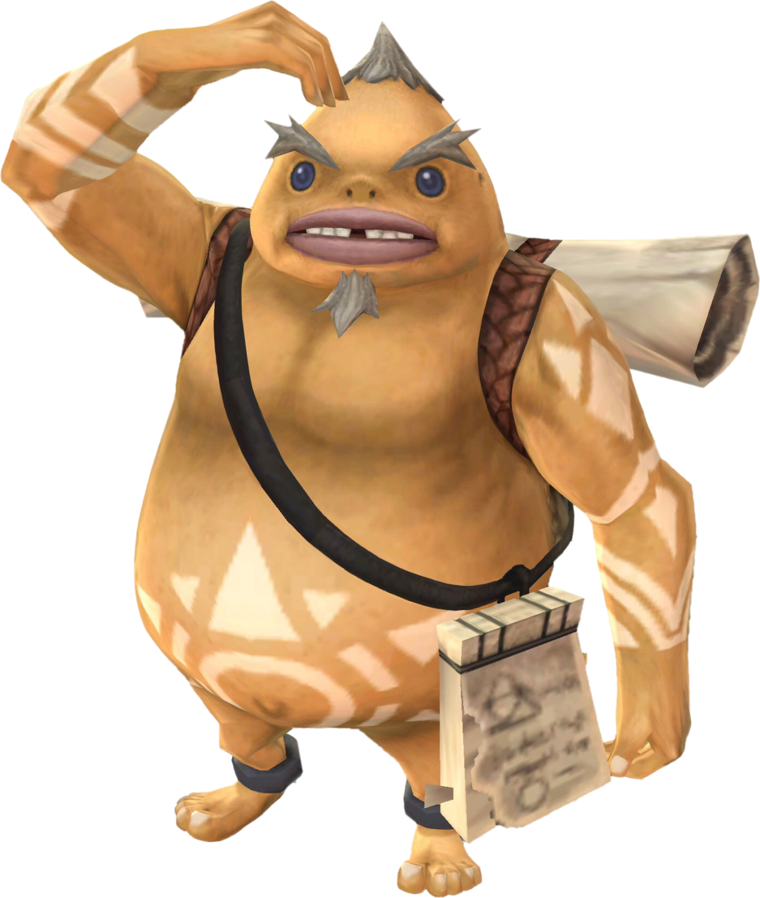

La Princesse Zelda est un personnage central de la série The Legend of Zelda. Bien que la série doive son nom à ce personnage, il ne s'agit pas
d'un personnage jouable dans la série mais elle reste un personnage imporant. Il y a même certains jeux où elle
n'apparaît pas ou très peu (comme Majora's Mask ou encore Tri Force Heroes).
Il s'agit d'un membre de la famille royale d'Hyrule.Elle est la plupart du temps enlevée par Ganondorf, Vaati ou un autre antagoniste et Link doit la secourir.
Comme Link, elle a de nombreuses incarnations au fil des jeux.

Link est le personnage principal de la série The Legend of Zelda, malgré le nom du jeu. Il est presque toujours orphelin et fait partie du
peuple des Hyliens. Il a des oreilles pointues, des cheveux clairs (blonds ou bruns), des yeux bleus, et il
est gaucher. Il porte une tunique verte dans tous les jeux de la saga, mais peut être amené à obtenir d'autres tenues ou à se transformer (il peut par exemple se transformer en loup).
Link a aussi la particularité de ne jamais parler dans les jeux.
Les peuples principaux :
- Les Hyliens : Peuple qui dirige le royaume et ressemblent à des humains mais avec des oreilles pointues. Zelda et Link font parti de ce peuple.
- Les Zoras : Croisement hommes/poissons. Vivent dans le domaine Zora ou le lac Hylia, dirigés par un roi. Après la destructions d'Hyrule, ils
deviennent le peuple Piaf.
- Les Gorons : Peuple de la montagne qui se nourissent de roche. Un des peuples les plus vieux de la série.
- Les mojos : Petites créatures qui crachent des noix Mojo sont parfois amis, parfois ennemis.
- Les Gerudos : Voleuses qui vivent dans le désert. c'est un peuple exclusivement fénimin.
- Skull Kid : Enfants qui aiment porter des masques ou des choses de la forêt. Vivent dans les bois et jouent d'un instrument. Sympathiques.
- Les Sheikahs : Peuple de l'ombre censé protéger la famille royale d'Hyrule. Il en reste très peu (membre notable : Impa). Aiment la discrétion
et possèdent des connaissances en magie impressionantes.
- Dragons : Parfois en boss, parfois en alliés.
- "Animaux" : Chevaux ou singes, ou d'autres inventés tels que les Chomps. Pas très utiles au jeu même si Link peut parfois interagir avec eux.
- Les Skimos : Ressemblent à des manchots, vivent dans la contrée des Neiges.
- les Kokiris : Enfants qui ne vieillissent pas. Vivent dans la forêt Kokiri avec l'Arbre Mojo.